|
• Noor Hidayu
This is my eldest sister, who is 35 years old. She is married and has four children which is two boys and two girls. She is currently working as a kindergarten teacher in Kuala Lumpur.
• Asmanina
This is my second sister, who is 31 years old. She is married and has a son. She is currently working at a cosmetics shop in Pasir Mas, Kelantan. She lives with my father and mother.
• Muhammad Al-Arafat
This is my brother. He is 29 years old and lives with his in-laws in Pasir Mas, Kelantan. He is married and has one son. He is currently working as a site supervisor at a company.
• Mohad Azahar
This is my second brother, who is 25 years old. He is married and has a daughter. He works as a soldier and lives in Kuala Lumpur.
• Muhammad Al-Saddam
This is my third brother, who is 23 years old and works at a supermarket in Kuala Lumpur. He is single and focuses on earning money to give me some, hehe.
• Noru Saidah
As for me, I am the sixth child and still single. I am currently focusing on studying for a higher level, thanks to everyone’s prayers.
• Nurul Afifah
This is my seventh sibling, who is 13 years old. She is currently studying at SMK Kubang Bemban in Pasir Mas, Kelantan.
• Nur Zuliani
This is my youngest sibling, who is 10 years old. He/She is studying at SK Bakong in Pasir Mas, Kelantan.
|


 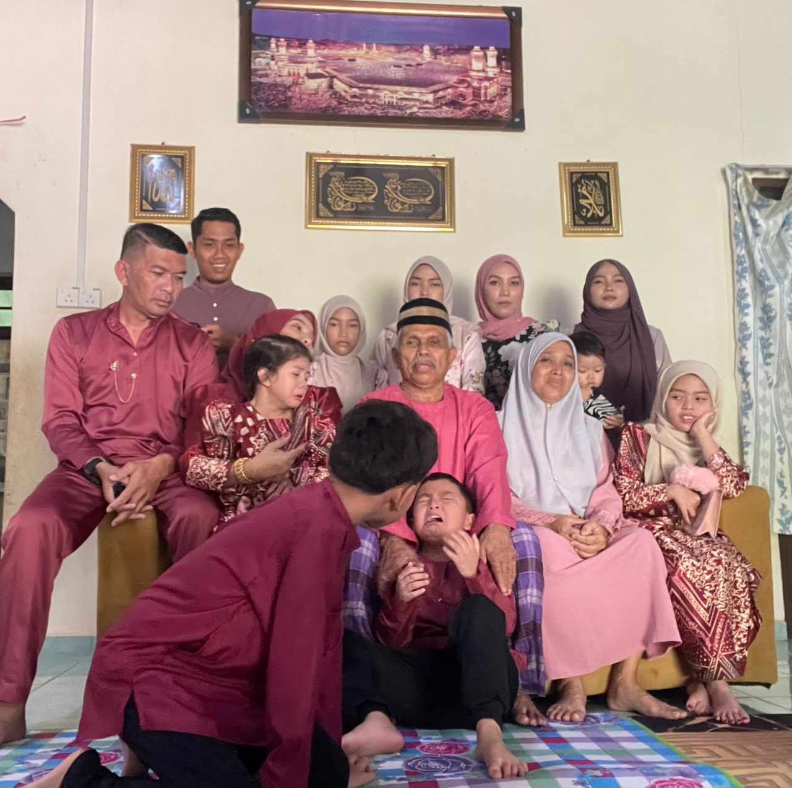
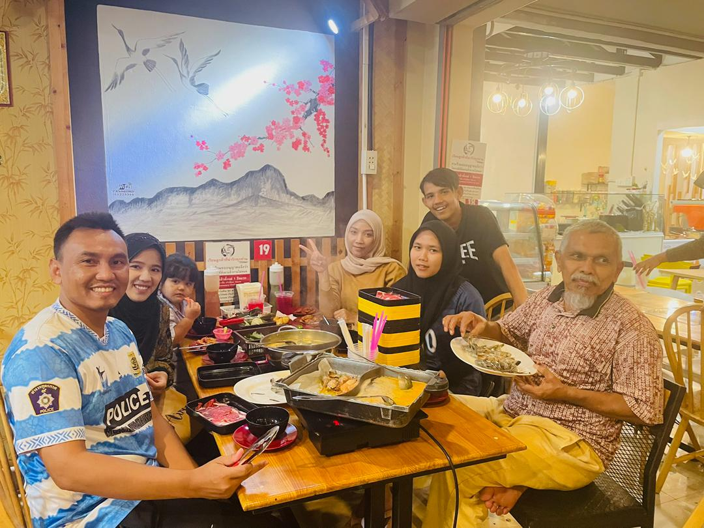
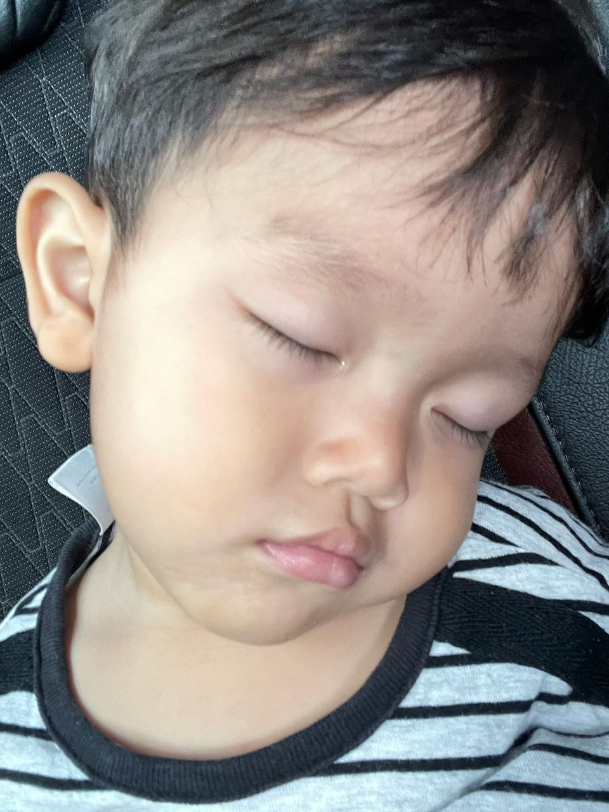
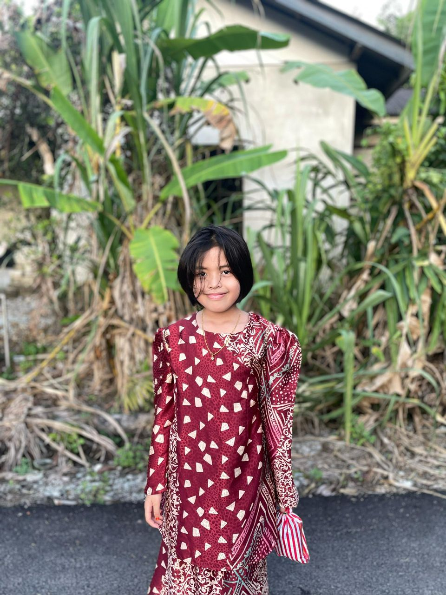
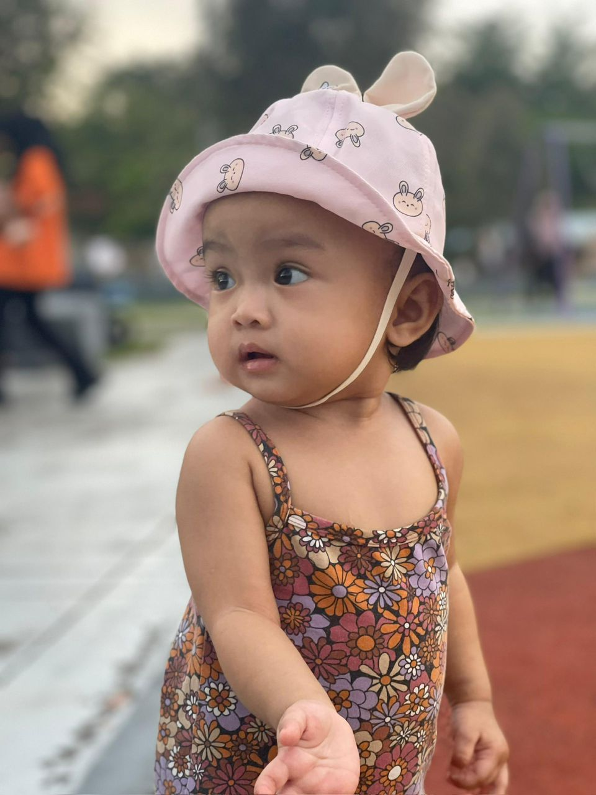
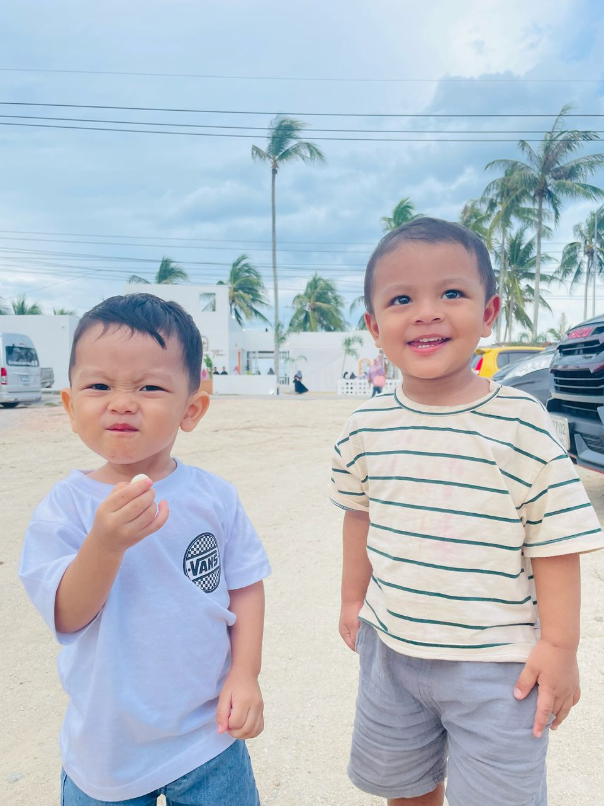
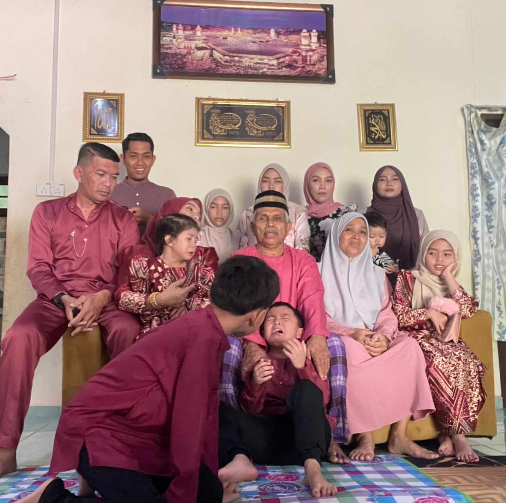
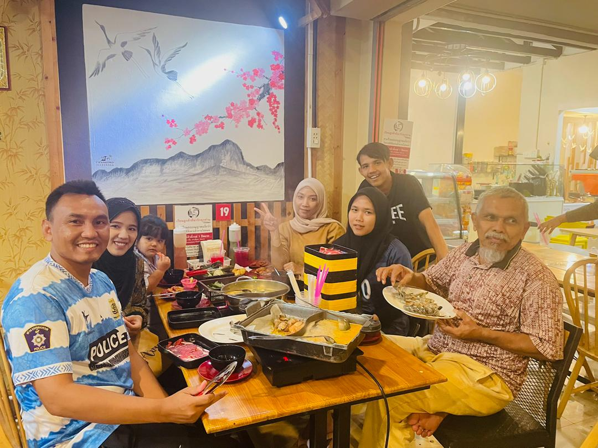
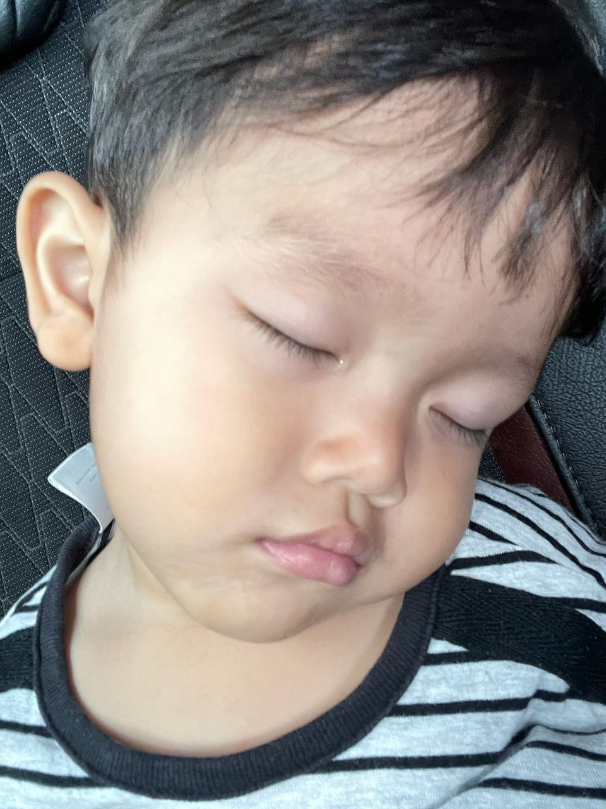
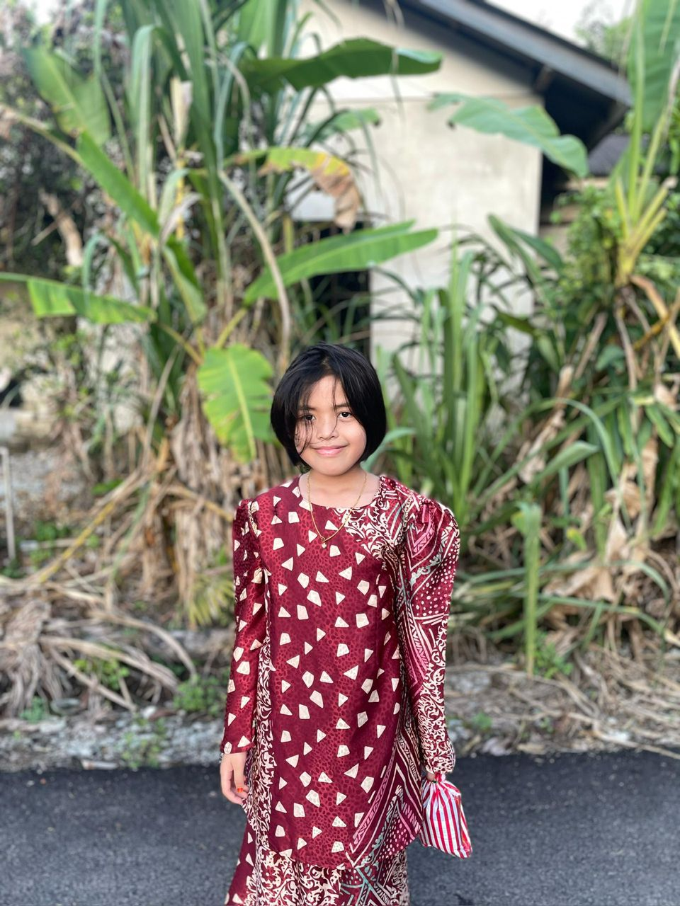
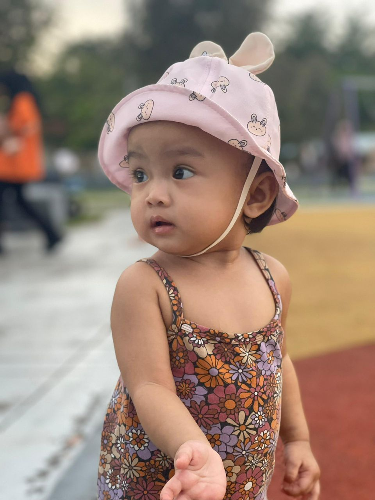
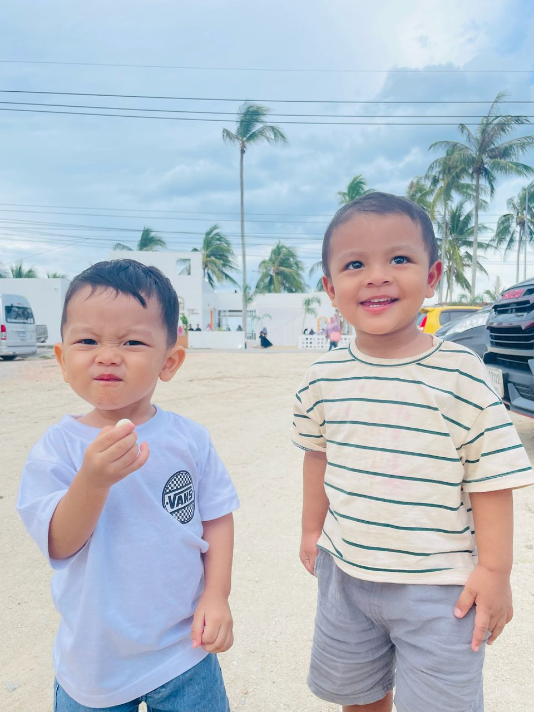